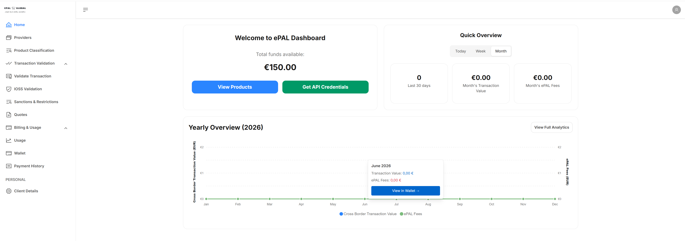

Home UI
Use this UI to get an overview of your recent activity before you decide what else you might want to do.
When you open the ePAL portal, the following UI is displayed:

To view all the products that you have classified, click View Products.
To retrieve your API credentials, click Get API Credentials.
The Quick Overview panel offers an overview for today, this week or the month. The number of transactions, cumulative total value of transactions and the total ePAL fees for the selected time period are shown in the panels below.
The Yearly Overview (Year) panel displays a timeline of your tranactions for the calendar year.